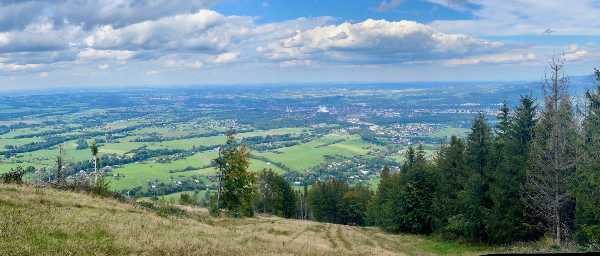
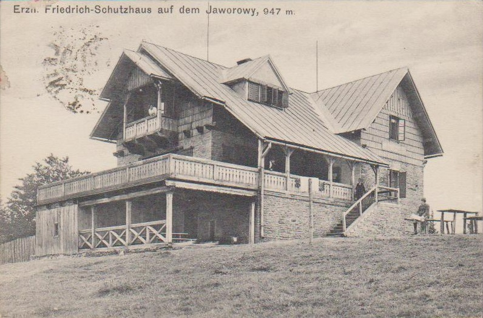
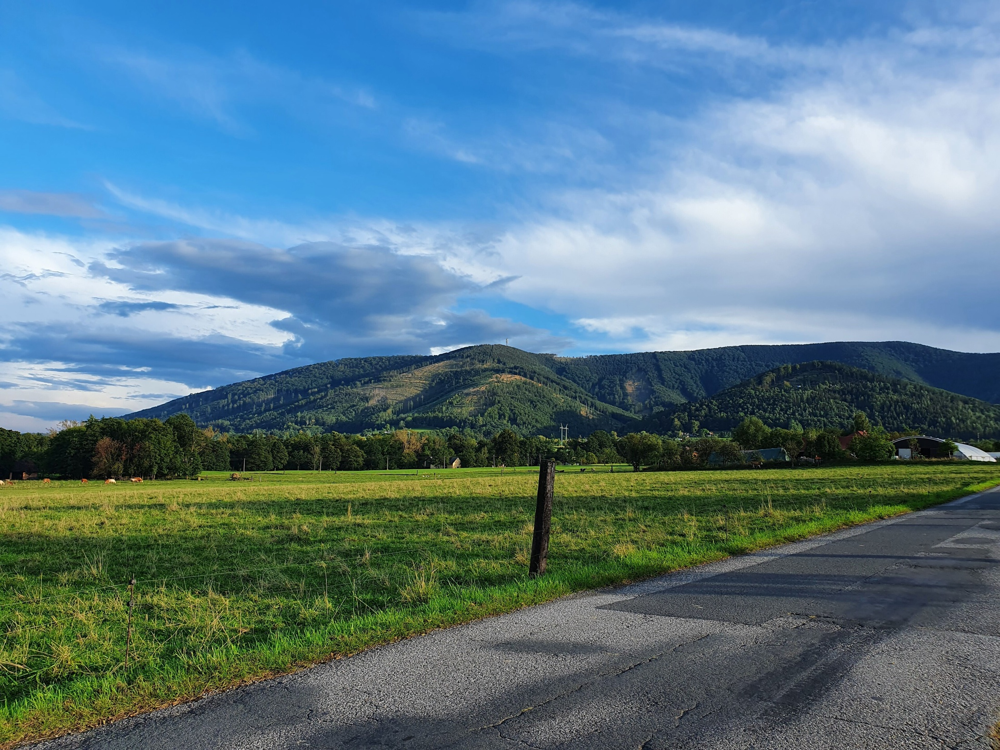
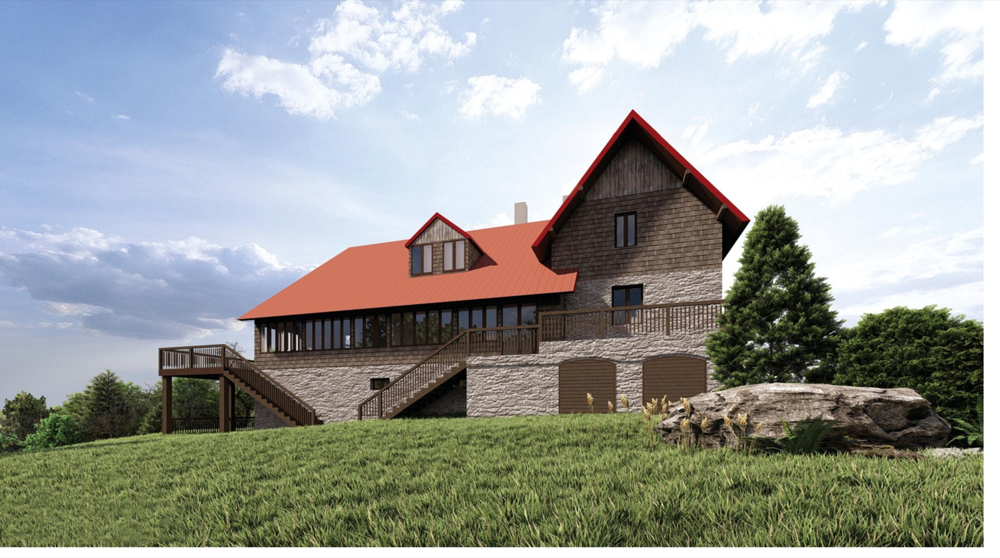
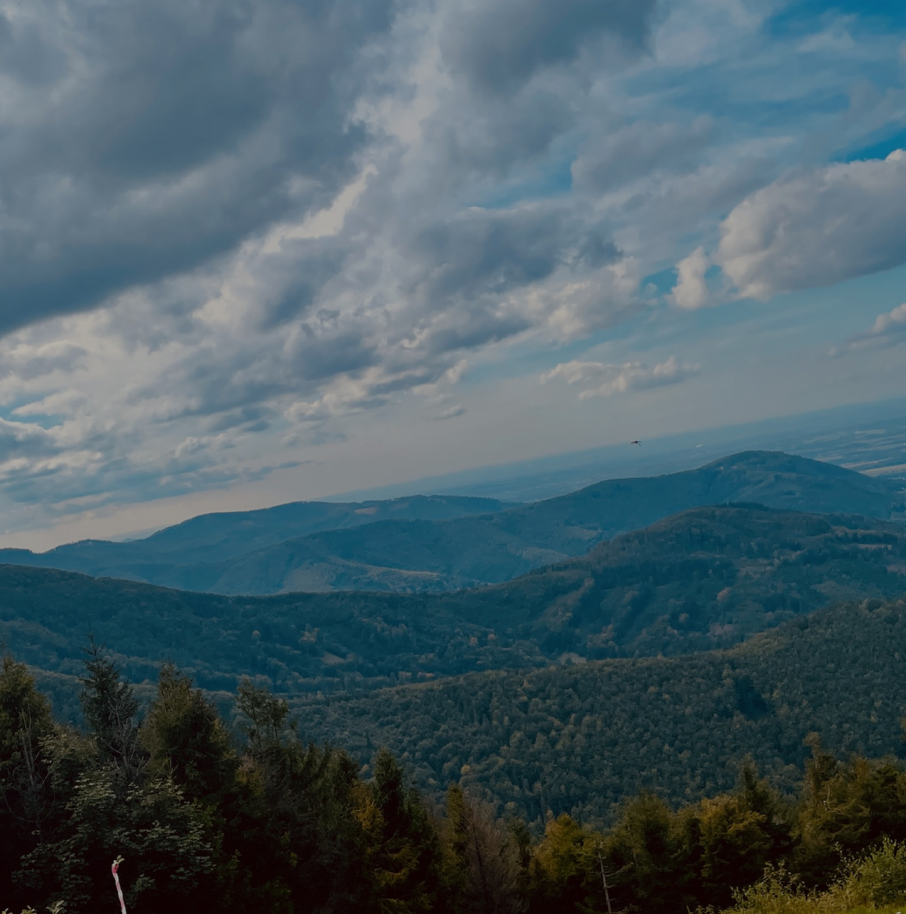

Rok práce. Stovky hlasů. Jeden kopec. Z pověření zastupitelstva jsme připravili podklad pro rozhodnutí o budoucnosti chaty i celého areálu — a tady je, co jsme zjistili.
Historie chaty
Chata na Javorovém stojí od roku 1895 — postavil ji turistický spolek Beskidenverein a je nejstarší chatou v této části Beskyd. Přečkala více než sto dvacet zim, hostila generace turistů z Třince i okolí a dnes patří městu. Právě k její původní podobě z přelomu 19. a 20. století se chceme rekonstrukcí vrátit.

Chata na pohlednici z roku 1910, ještě před přístavbou verandy. Zdroj: sbírka Stanislava Kroczka, volné dílo.
Jak vize vznikala
Zastupitelstvo pověřilo tři z nás přípravou budoucnosti areálu.
Konzultace postupu s Českou komorou architektů.
415 dotazníků, 14 rozhovorů, veřejná beseda i setkání s architekty.
Studie proveditelnosti a první vizualizace chaty.
Vize je na stole — tři návrhy architektů a výběr i s vámi.
Co ukázal průzkum
z vás považuje Javorový za jednu z hlavních dominant Třince
z vás vyrazí na kopec několikrát ročně
občanů se zapojilo do dotazníku o budoucnosti Javorového
Co říká průzkum
Občerstvení na chatě si dává 88 % z vás — jídlo ale hodnotíte známkou 2,1 z 5 a ubytování 3 z 5. Proto chceme víc:
Chata
Průzkum v číslech
Rozhovory s aktéry
Klíčové zjištění
Pro 65 % z vás je ochrana přírody na Javorovém důležitá. Většina si přeje, aby návštěvnost zásadně nerostla — kvůli přírodě i unikátnímu charakteru místa. Chceme, aby kopec sloužil líp. Nám všem.

Naše vize
Mluví za to i čísla: za turistikou na kopec chodí 91 % z vás, na lyžích jezdí 7 %. Klimatické změny rozhodly — z Javorového už nebude lyžařský areál. To ale otevírá nové možnosti: sport, kulturu a komunity po celý rok. Areál zůstává v rukou města a chata se vrátí k podobě, jakou měla v roce 1895.
Naše doporučení a zadání
Nechceme z Javorového nové Pustevny. Chceme, aby město mělo chatu i areál dál ve svých rukou — a investovalo do nich.
Rekonstrukce chaty do původní podoby z přelomu 19. a 20. století — s novou terasou směrem na jih.
Oddělené místo pro konání akcí — letní scéna a menší akce na místě zbouraných chat.
Sociální zázemí a WC otevřené 24/7 — nezávislé na hlavní chatě.
Zázemí pro spolky a kluby, které na kopci žijí — sklad, klubovna, přenocování.
Nové atrakce pro rodinné výlety — pro děti od 0 do 15 let.
Celoroční zázemí pro turisty a sportovce — kopec slouží v létě i v zimě.
Návštěvnost nemá rapidně růst — zachováme charakter místa.
Kladný vztah k přírodě — energie, materiály, propojení s okolím.
Respekt k územnímu plánu a technická řešení připravená na různé provozovatele.
Odpovědné nakládání s odpady — dnes často končí v lese.
Výběrové řízení na nového nájemce až po rekonstrukci — s novými podmínkami nájmu.

Vizualizace: KANIA a.s. — studie proveditelnosti zpracovaná pro město, květen 2024, varianta 2. Ukazuje záměr, ne finální podobu.
Studie proveditelnosti · KANIA, 2024
Nezačínáme na zelené louce — studie proveditelnosti spočítala tři varianty, jak s chatou naložit. Ceny jsou včetně DPH.
Okna a dveře, elektroinstalace, nová čistírna odpadních vod, rekonstrukce střechy a podhledů. Chata přežije — ale nic víc.
Vše z údržby + jednotná fasáda a nová dřevěná terasa pro 70 lidí inspirovaná tou historickou. Této variantě odpovídá vizualizace výše.
Nová budova na kamenném základu — restaurace s terasou pro 100 lidí, ubytování pro 40 osob, fotovoltaika na jižní střeše.
Doporučení Osobností pro Třinec
Rekonstrukce chaty s novou terasou.
Chatu ani vrch neprodávat — ale investovat do rekonstrukce. A nejen do samotné chaty, hlavně do jejího okolí a zázemí tak, aby byl Javorový místem pro setkávání i akce. Samozřejmě v režimu ochrany přírody a udržitelnosti.
Bez vazby na lyžování a sjezdovky — ty bychom nájemci chaty vyjmuli ze smlouvy a postupně našli nové využití těchto prostorů.
Spolu s dalšími aktéry — krajem, Lesy ČR i poskytovateli dotací — budeme pokračovat v diskusi, co dál s lanovkou na Javorový. Nebránili bychom se jejímu převodu na město a hlavně lepšímu využití celého objektu dolní stanice, například jako komunitního centra nebo místa pro akce.
Z průzkumu ani z diskusí nevyplynulo, že by lidé toužili na Javorovém dál lyžovat. To samozřejmě nebrání dalšímu využití Mamlas placu pro nové zimní i letní aktivity.
Jak dál
Návrh nové chaty jde získat třemi cestami. Porovnali jsme je a doporučujeme zakázku třem architektům — je rychlá, dostupná a jako jediná spojuje výběr z více návrhů se zapojením veřejnosti.
Pokud budeme zvoleni, budeme prosazovat celkovou koncepci vrchu i areálu Javorový. Jako první věc začneme spolupracovat s architekty a dál zapojovat veřejnost do diskuse.
Tři místní architekti se vztahem k Beskydům připraví tři návrhy nové chaty.
Návrhy veřejně představíme — výstava i online galerie.
Občané a odborná porota pomohou vybrat vítězný návrh.
Město zajistí financování a projekt dotáhne k realizaci.

Javorový 2026
Vize je na stole. Teď je na řadě zadání pro architekty — a výběr, u kterého budete i vy.